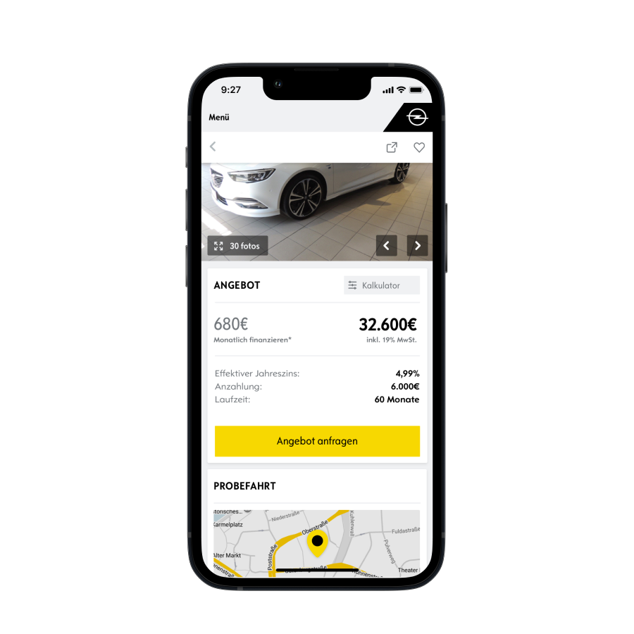
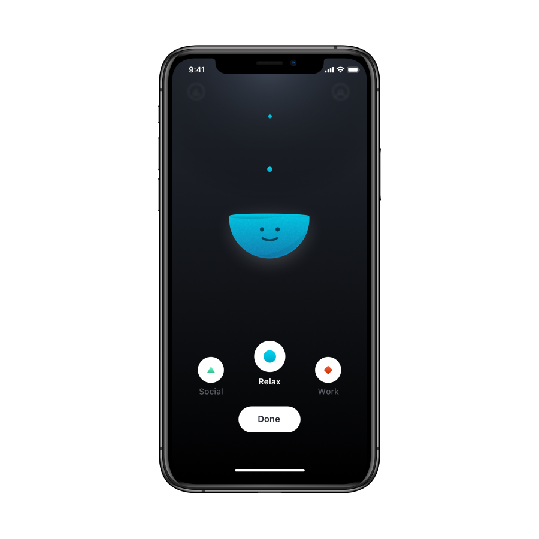
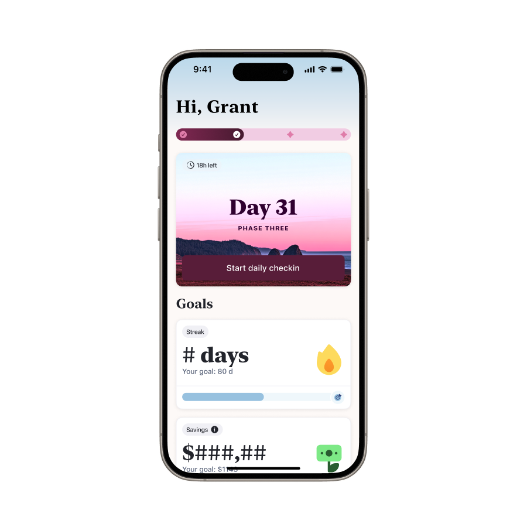
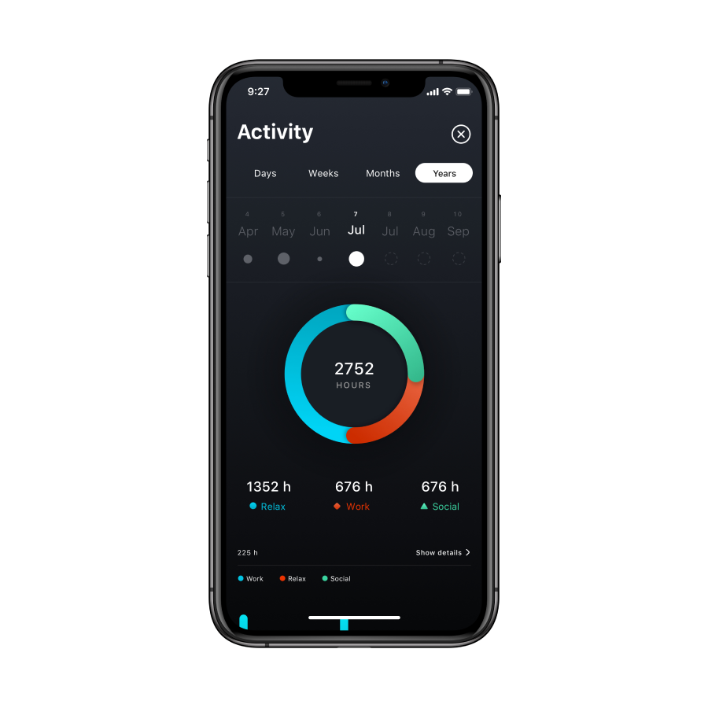
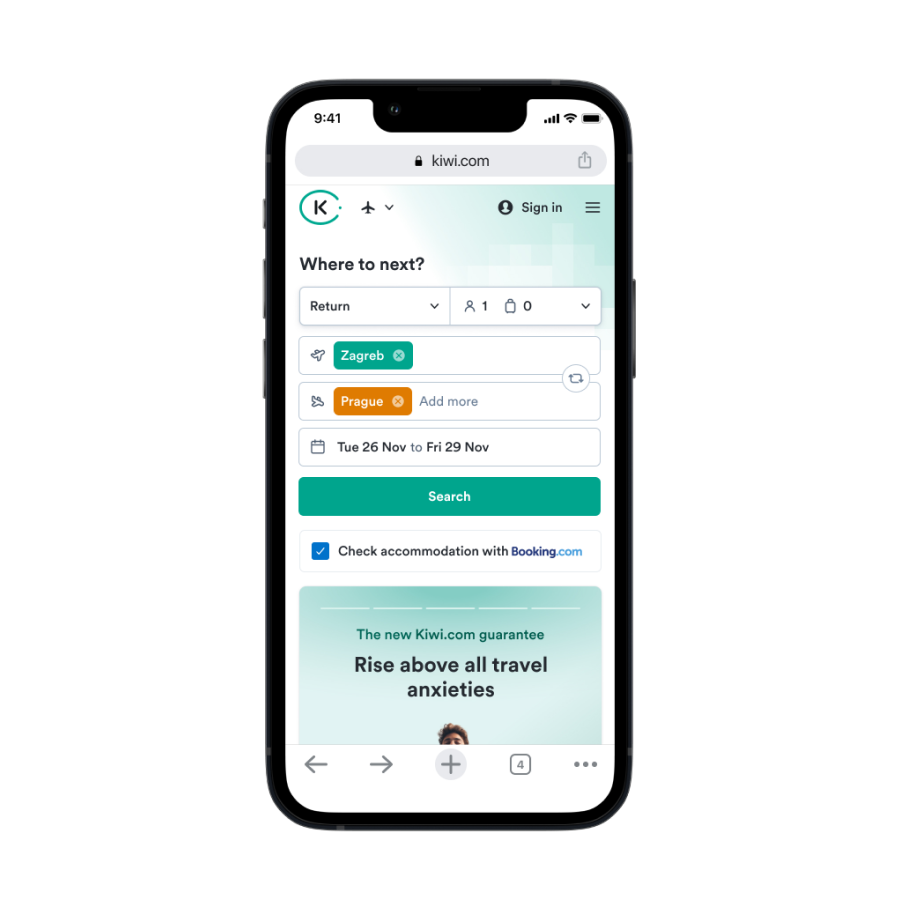
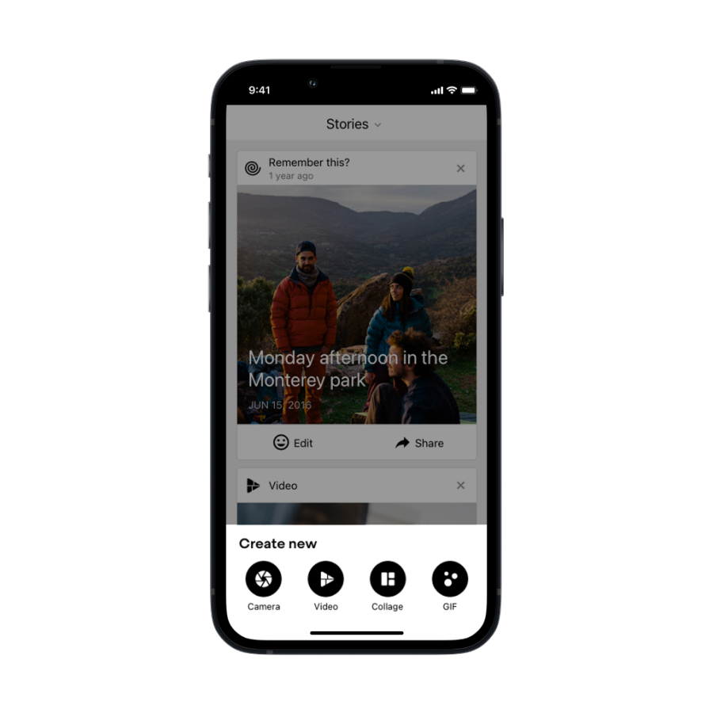

Mihovil Vargović
Product designer focused on crafting user-friendly, accessible experiences that drive business outcomes.
Links






Product designer focused on crafting user-friendly, accessible experiences that drive business outcomes.





